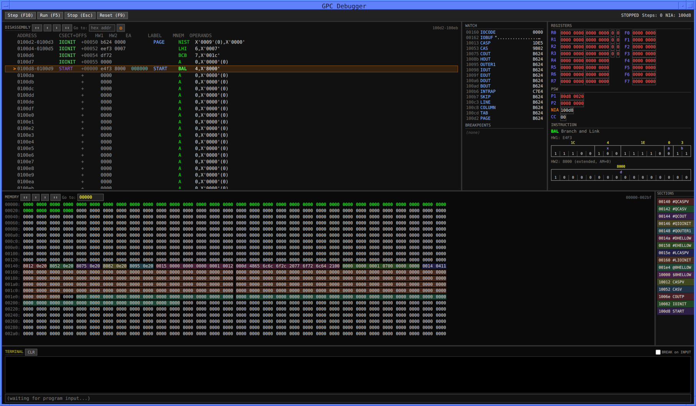
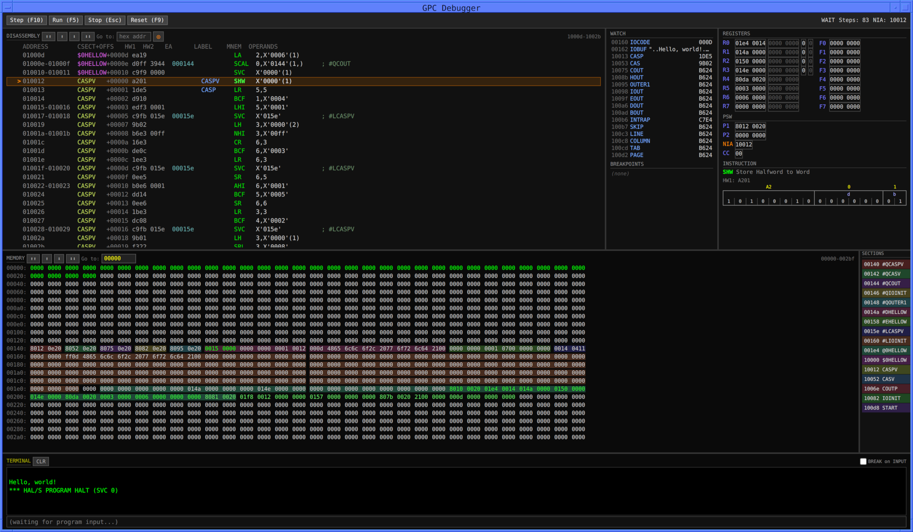

This page is available under the Creative Commons No Rights Reserved License
Last modified by Ronald Burkey on 2026-07-22

You can choose to install any or all of the available
emulators. Or none of them, of course, though if so, I'd
question why you're even reading this at all.
I'd note that most of these emulators are written by independent
developers and reside in their own projects, separate from the
Virtual AGC Project itself, so I literally have no way of giving
you authoritative installation instructions for them, or of
dealing with problems you encounter using them. Nor are all
of the emulators (yet) at fully-comparable levels of development
or capability. Weighing all of that, I'll very-subjectively
prioritize them as follows in terms of which ones I think might be
most useful to you if you're complete newbies. Of course,
the rankings are just at the time of this writing ... all of which
may (and probably will!) change in time.
|
yaHALMAT2
I'll assume you have a local clone of the Virtual AGC source tree from GitHub, and for the sake of argument I'll refer to that local directory as virtualagc.
But use the actual directory name in the
instructions below.To build it on Linux or Mac OS, simply On Windows, you should be able to build it either in an MSYS2 environment (for which the instructions should be the same as above), or else in a Windows "developer" terminal using Visual C. In the latter case, I'm told that instead of make you have to use nmake, along with the makefile called Makefile.win. But I've only built yaHALMAT2 on Linux, so you can regard anything I say about Mac OS or Windows as speculative. The default on Linux, Mac, or Windows with MSYS2 is to use clang as the compiler if available, falling back on gcc. Regardless of the platform, you can choose any compiler you want by specifying it on the make/nmake command line with thecd virtualagc/yaShuttle/yaHALMAT2/src CC variable. I
have not tried that myself.Finally, once compiled, unless you want to invoke yaHALMAT2 by using its full pathname, you'll probably want to copy or link yaHALMAT2[.exe] somewhere into your existing path, or else change your PATH variable to
include the directory that yaHALMAT2 is in.
I'll let you to figure out that part. |
|
gpc
To my recollection, I have lost the ability to build gpc from source, but perhaps the author's instructions might work for you. I think what worked for me was to download the pre-built "AppImage" for Linux, rename it "gpc", and copy it into my path. There are also pre-built Mac OS "dmg" files at the same link, though I don't know how to use them myself. As far as Windows is concerned, I haven't a clue as to what you have to do. |
|
ap0000a
(Not yet publicly available. I've seen it privately, only in very-preliminary versions.) |
|
yaHALMAT
You need first to clone the source tree from GitHub (or download it via a zipfile) into a local directory in your filesystem. For the sake of discussion, let's suppose that the local directory is called Halmat. If you've chosen to call
it something else, then substitute the correct name
instead. To build it on Linux or Mac OS, do this:On Windows? Maybe it will work. I don't know, I've only tried it on Linux myself.cd Halmat/emu Finally, once compiled, unless you want to invoke yaHALMAT by using its full pathname, you'll probably want to copy or link yaHALMAT[.exe] somewhere into your existing path, or else change your PATH variable to
include the directory that yaHALMAT is in.
I'll let you to figure out that part. |
Supporting HALMAT is quite a bit trickier than supporting AP-101S
machine language, not because of its structure, but for historical
reasons. So a few words of explanation are in order.
As you already know, the original compiler used for converting
Space Shuttle flight software written in the high-level language
known as HAL/S into assembly-language object code for the Space
Shuttle's general purpose computers was partitioned into several
successive passes as follows:
Thus although complete documentation about
HALMAT in a nicely-packaged, authoritative document seems to have
escaped us, it is not necessarily clear that we couldn't
regenerate a complete description of the language through reverse
engineering. And if we could do that, perhaps a HALMAT
emulator could become a reality. It is, however, very tricky
to do so, or to justify without advance guarantee of success.
> HALSFC --clean --archive --parms=SRN,LSTALL,ADDRS,LISTING2 HELLO.hal
Results stored in the folder "archive.results/HALSFC HELLO.hal 2026-07-20 06-51-35.results".
Accessible also as "current.results" until next HALSFC run.
For previous runs see also "current-1.results", "current-2.results".
Compilation successful.
> cd current.results
> unHALMAT.py halmat.bin
7200 bytes read from halmat.bin
RECORD 0
HALMAT #0 (0x005, Start of HALMAT block): PXRC(1) 00 0 0
HALMAT #1 | 05C 00 00( 0) 00 00 00 01 00 00 (Matching XREC is at HALMAT #92)
HALMAT #2 (0x02B, Start of PROGRAM definition): MDEF(1) 00 0 0
HALMAT #3 | 001 00 01(SYT) 00 00 00 01 00 00 (Symbol #1: HELLO, PROGRAM LABEL)
HALMAT #4 (0x004, HAL/S statement marker): SMRK(1) 00 1 0
HALMAT #5 | 001 00 00( 0) 00 00 01 01 00 01 (HAL/S statement #1)
1 M| HELLO: |
1 M| PROGRAM; |
HALMAT #6 (0x004, HAL/S statement marker): SMRK(1) 00 1 0
HALMAT #7 | 002 00 00( 0) 00 00 00 01 00 00 (HAL/S statement #2)
2 M| DECLARE I INTEGER; |
HALMAT #8 (0x004, HAL/S statement marker): SMRK(1) 00 1 0
HALMAT #9 | 003 00 00( 0) 00 00 00 01 00 00 (HAL/S statement #3)
3 M| DECLARE POOKIE CHARACTER(20); |
HALMAT #10 (0x841, CHARACTER INITIAL value): CINT(2) 02 0 0
HALMAT #11 | 004 00 01(SYT) 00 00 00 01 00 00 (Symbol #4: MY_NAME, CHARACTER ALIGNED STATIC INITIAL)
HALMAT #12 | 003 00 05(LIT) 00 00 00 01 00 00 (Literal #3: Type CHARACTER, 'RON BURKEY')
HALMAT #13 (0x004, HAL/S statement marker): SMRK(1) 00 1 0
HALMAT #14 | 004 00 00( 0) 00 00 00 01 00 00 (HAL/S statement #4)
4 M| DECLARE MY_NAME CHARACTER(20) INITIAL('RON BURKEY'); |
HALMAT #15 (0x004, HAL/S statement marker): SMRK(1) 00 1 0
HALMAT #16 | 005 00 00( 0) 00 00 00 01 00 00 (HAL/S statement #5)
5 M| DECLARE INTEGER, J; |
HALMAT #17 (0x004, HAL/S statement marker): SMRK(1) 00 1 0
HALMAT #18 | 006 00 00( 0) 00 00 00 01 00 00 (HAL/S statement #6)
6 M| REPLACE PRINTER BY "6"; |
HALMAT #19 (0x031, End of DECLAREs): EDCL(0) 01 1 0
HALMAT #20 (0x025, Start of argument list): XXST(1) 00 1 0
HALMAT #21 | 002 00 06(IMD) 00 00 00 01 00 00 (Immediate integer data 2 0x2)
HALMAT #22 (0x027, Argument): XXAR(1) 00 1 0
HALMAT #23 | 005 02 05(LIT) 00 00 00 01 00 00 (Literal #5: Type CHARACTER, 'THE BEGINNING')
HALMAT #24 (0x021, WRITE statement): WRIT(1) 00 0 0
HALMAT #25 | 006 00 06(IMD) 00 00 00 01 00 00 (Immediate integer data 6 0x6)
HALMAT #26 (0x026, End of argument list): XXND(0) 00 0 0
HALMAT #27 (0x004, HAL/S statement marker): SMRK(1) 00 1 0
HALMAT #28 | 007 00 00( 0) 00 00 01 01 00 01 (HAL/S statement #7)
7 M| WRITE(PRINTER) 'THE BEGINNING'; |
.
.
.
HALMAT #79 (0x025, Start of argument list): XXST(1) 00 1 0
HALMAT #80 | 002 00 06(IMD) 00 00 00 01 00 00 (Immediate integer data 2 0x2)
HALMAT #81 (0x027, Argument): XXAR(1) 00 1 0
HALMAT #82 | 011 02 05(LIT) 00 00 00 01 00 00 (Literal #17: Type CHARACTER, 'THE END')
HALMAT #83 (0x021, WRITE statement): WRIT(1) 00 0 0
HALMAT #84 | 006 00 06(IMD) 00 00 00 01 00 00 (Immediate integer data 6 0x6)
HALMAT #85 (0x026, End of argument list): XXND(0) 00 0 0
HALMAT #86 (0x004, HAL/S statement marker): SMRK(1) 00 1 0
HALMAT #87 | 00E 00 00( 0) 00 00 01 01 00 01 (HAL/S statement #14)
14 M| WRITE(6) 'THE END'; |
HALMAT #88 (0x030): CLOS(1) 00 0 0
HALMAT #89 | 001 00 01(SYT) 00 00 00 01 00 00 (Symbol #1: HELLO, PROGRAM LABEL)
HALMAT #90 (0x004, HAL/S statement marker): SMRK(1) 00 1 0
HALMAT #91 | 00F 00 00( 0) 00 00 01 01 00 01 (HAL/S statement #15)
15 M| CLOSE HELLO; |
HALMAT #92 (0x002, End of HALMAT block): XREC final
Human-friendly, you say? What kind of dope dream is
that? Well, let's just go through a few lines of it:
PROGRAM (versus a PROCEDURE,
FUNCTION, or COMPOOL).PROGRAM is named HELLO.
That information is just to help out the reader, though.
HALMAT only cares that it's "Symbol #1", and not what it's
particular name is in your imagination.1 M| HELLO:
followed by 1 M| PROGRAM;.2 M| DECLARE I INTEGER;,
which apparently doesn't require any HALMAT instructions.3 M| DECLARE MY_NAME
CHARACTER(20) INITIAL('RON BURKEY');,
"Symbol #3" is a "CHARACTER INITIAL value", whose symbol for
your reading ease is MY_NAME, and whose value is
"RON BURKEY".CHARACTER literals instead appears in
the second of the files, with the first file providing only an index
into the second file. Too complex for your tastes? Mine
too! But I'm not the one who set it up that way. Here's
a handy lookup table for the default filenames involved:| Compiler/Pass |
HALMAT Filename |
First Literal File |
Second Literal File |
|---|---|---|---|
| HALSFC-PASS1 |
halmat.bin |
litfile0.bin |
COMMON0.out.bin.gz |
| HALSFC-OPT |
optmat.bin |
litfile2.bin |
COMMON2.out.bin.gz |
| HAL_S_FC.py |
FILE1.bin |
FILE2.bin |
LIT_CHAR.bin |
INTEGER and SCALAR datatypes), string
literals (CHARACTER datatype), and bit literals (BIT
datatype). It's best to illustrate them by looking at the
source-code itself, where I've highlighted all of the literals in purple:I bet you're scratching your head over that, aren't you?DEBUG ¢C¢D¢E¢F
HELLO: PROGRAM;
DECLARE I INTEGER;
DECLARE MY_NAME CHARACTER(20) INITIAL('RON BURKEY');
DECLARE INTEGER, J;
REPLACE PRINTER BY "6";
WRITE(PRINTER) 'THE BEGINNING';
DO FOR I = 1 TO 5;
WRITE(PRINTER) I, 'HELLO, WORLD!';
DO FOR J = 2 TO 8 BY 2;
WRITE(PRINTER) ' ', J, MY_NAME||' SAYS ISN''T THIS FUN?';
END;
END;
WRITE(6) 'THE END';
CLOSE HELLO;
"6"
is not a literal but PRINTER is one? Remember
that in HAL/S, something like REPLACE PRINTER BY "6"
is really a preprocessor instruction causing every instance
of PRINTER to be replaced by 6. So
as far as the HALMAT is concerned, there isn't any such thing as
"PRINTER", there's only 6, whereas to the compiler the opposite is
true.Exactly as you might guess from our purple highlights!> unLitfile litfile0.bin
Literal 1: FIXED 42140000,00000000 ' 2.000000000000000E+01'
Literal 2: STRING 'RON BURKEY'
Literal 3: FIXED 41600000,00000000 ' 6.000000000000000E+00'
Literal 4: STRING 'THE BEGINNING'
Literal 5: FIXED 41100000,00000000 ' 1.000000000000000E+00'
Literal 6: FIXED 41500000,00000000 ' 5.000000000000000E+00'
Literal 7: FIXED 41600000,00000000 ' 6.000000000000000E+00'
Literal 8: STRING 'HELLO, WORLD!'
Literal 9: FIXED 41200000,00000000 ' 2.000000000000000E+00'
Literal 10: FIXED 41800000,00000000 ' 8.000000000000000E+00'
Literal 11: FIXED 41200000,00000000 ' 2.000000000000000E+00'
Literal 12: FIXED 41600000,00000000 ' 6.000000000000000E+00'
Literal 13: STRING ' '
Literal 14: STRING ' SAYS ISN'T THIS FUN?'
Literal 15: FIXED 41600000,00000000 ' 6.000000000000000E+00'
Literal 16: STRING 'THE END'
Aside: Beware, though, because the litfile format doesn't allow determination of the total number of literals contained within it — you just have to know! —, so unLitfile doesn't know for sure where the list ends. There may be extra literals at the end of the list that look like real literals but have little to do with anything in the HAL/S source code. More precisely: the litfile is formatted as a series of "pages" of 130 literals each, and generally speaking, any unused areas in the final page will be duplicates of literals found in corresponding locations on the penultimate page. If there are 130 or less literals, as in the example above, all is well. If there are more than 130, but not an exact multiple of 130, there will be bogus literals at the end.But you don't really need unLitfile if you're just curious about how literals are communicated between compiler passes. When
¢E is present in a DEBUG
directive in the HAL/S file, it causes the compiler to print the
entire literal table in the report (pass1.rpt) it emits from its
parsing path. Not surprisingly, you get the same info as from
unLitfile, albeit with a little less info ... but
with the added benefit that since the compiler actually knows how
many literals there are, it doesn't print any bogus ones at the end
of the list!L I T E R A L T A B L E D U M P:
LOC TYPE LITERAL
1 ARITH 4214000000000000
2 CHAR RON BURKEY
3 ARITH 4160000000000000
4 CHAR THE BEGINNING
5 ARITH 4110000000000000
6 ARITH 4150000000000000
7 ARITH 4160000000000000
8 CHAR HELLO, WORLD!
9 ARITH 4120000000000000
10 ARITH 4180000000000000
11 ARITH 4120000000000000
12 ARITH 4160000000000000
13 CHAR
14 CHAR SAYS ISN'T THIS FUN?
15 ARITH 4160000000000000
16 CHAR THE END
The other little mystery, if you've kept your eyes open, is that unLitfile seems to be implying that literals like 1, 8, or 6 are really floating-point. Or at least, are stored that way. It's true. The numeric literals, whether SCALAR or INTEGER, double or single precision, are stored in the litfiles as double-precision floating point in so-called IBM Hexadecimal (HFP) format. BIT literals, on the other hand, of which there are none in our example, are all stored as 32-bit big-endian form.
Compile it:HELLO: PROGRAM;
WRITE(6) 'Hello, world!';
CLOSE HELLO;
And now we want to run it. As we saw above, there are several different HALMAT files we could use, so there are several different yaHALMAT invocations we could use. Running the unoptimized HALMAT from HALSFC would be done like this:HALSFC --test REALLY_HELLO.hal
yaHALMAT halmat.bin
yaHALMAT optmat.bin
but I accomplished the same thing by adding theHAL_S_FC.py --hal=REALLY_HELLO.hal
--test
switch to the HALSFC command line, so we end up with the
files we wanted anyway:The output in any of these emulations looks exactly the same:yaHALMAT --litfile FILE2.bin --common LIT_CHAR.bin FILE1.bin
But instead, let's try the goofy HELLO.hal we've been using to demonstrate lots of stuff, namelyHello, world!
Compile and run it:DEBUG ¢C¢D¢E¢F
HELLO: PROGRAM;
DECLARE I INTEGER;
DECLARE MY_NAME CHARACTER(20) INITIAL('RON BURKEY');
DECLARE INTEGER, J;
REPLACE PRINTER BY "6";
WRITE(PRINTER) 'THE BEGINNING';
DO FOR I = 1 TO 5;
WRITE(PRINTER) I, 'HELLO, WORLD!';
DO FOR J = 2 TO 8 BY 2;
WRITE(PRINTER) ' ', J, MY_NAME||' SAYS ISN''T THIS FUN?';
END;
END;
WRITE(6) 'THE END';
CLOSE HELLO;
And just for OCD's sake, a final example source-code example:> HALSFC HELLO.hal
Compilation successful. Results in "HALSFC HELLO.hal Tue 02-24-2026 6-50-07.00.results".
> yaHALMAT halmat.bin
THE BEGINNING
1 HELLO, WORLD!
2 RON BURKEY SAYS ISN'T THIS FUN?
0 RON BURKEY SAYS ISN'T THIS FUN?
0 RON BURKEY SAYS ISN'T THIS FUN?
0 RON BURKEY SAYS ISN'T THIS FUN?
0 RON BURKEY SAYS ISN'T THIS FUN?
0 HELLO, WORLD!
2 RON BURKEY SAYS ISN'T THIS FUN?
0 HELLO, WORLD!
2 RON BURKEY SAYS ISN'T THIS FUN?
0 HELLO, WORLD!
2 RON BURKEY SAYS ISN'T THIS FUN?
0 HELLO, WORLD!
2 RON BURKEY SAYS ISN'T THIS FUN?
0 HELLO, WORLD!
2 RON BURKEY SAYS ISN'T THIS FUN?
THE END
Emulating this we get:POWER_TABLE: PROGRAM;
WRITE(6) ' N N**2 N**3 N**4 N**5';
WRITE(6) ' ---------- ---------- ---------- ---------- ----------';
DO FOR TEMPORARY N = 1 TO 10;
WRITE(6) N, N N, N**3, N**4, N**5;
END;
CLOSE POWER_TABLE;
N N**2 N**3 N**4 N**5
---------- ---------- ---------- ---------- ----------
1 1 1 1 1
2 4 8 16 32
3 9 27 81 243
4 16 64 256 1024
5 25 125 625 3125
6 36 216 1296 7776
7 49 343 2401 16807
8 64 512 4096 32768
9 81 729 6561 59049
10 100 1000 10000 100000
Compile it and run it:DEBUG ¢4 ¢E
HELLO: PROGRAM;
DECLARE I INTEGER;
DECLARE POOKIE CHARACTER(20);
DECLARE MY_NAME CHARACTER(20) INITIAL('RON BURKEY');
DECLARE INTEGER, J;
REPLACE PRINTER BY "6";
WRITE(PRINTER) 'THE BEGINNING';
DO FOR I = 1 TO 5;
WRITE(PRINTER) I, 'HELLO, WORLD!';
DO FOR J = 2 TO 8 BY 2;
WRITE(PRINTER) ' ', J, MY_NAME||' SAYS ISN''T THIS FUN?';
END;
END;
WRITE(6) 'THE END';
CLOSE HELLO;
The emulator also has a debugging mode built into it, modeled after the gdb debugger. Below, I load halmat.bin in debugging mode and single step through a few HALMAT instructions:> HALSFC HELLO.hal
Results stored in the folder "HALSFC HELLO.hal 2026-07-20 11-50-02.results".
Accessible also as "current.results" until next HALSFC run.
For previous runs see also "current-1.results", "current-2.results".
Compilation successful.
> yaHALMAT2 halmat.bin
THE BEGINNING
1 HELLO, WORLD!
2 RON BURKEY SAYS ISN'T THIS FUN?
4 RON BURKEY SAYS ISN'T THIS FUN?
6 RON BURKEY SAYS ISN'T THIS FUN?
8 RON BURKEY SAYS ISN'T THIS FUN?
2 HELLO, WORLD!
2 RON BURKEY SAYS ISN'T THIS FUN?
4 RON BURKEY SAYS ISN'T THIS FUN?
6 RON BURKEY SAYS ISN'T THIS FUN?
8 RON BURKEY SAYS ISN'T THIS FUN?
3 HELLO, WORLD!
2 RON BURKEY SAYS ISN'T THIS FUN?
4 RON BURKEY SAYS ISN'T THIS FUN?
6 RON BURKEY SAYS ISN'T THIS FUN?
8 RON BURKEY SAYS ISN'T THIS FUN?
4 HELLO, WORLD!
2 RON BURKEY SAYS ISN'T THIS FUN?
4 RON BURKEY SAYS ISN'T THIS FUN?
6 RON BURKEY SAYS ISN'T THIS FUN?
8 RON BURKEY SAYS ISN'T THIS FUN?
5 HELLO, WORLD!
2 RON BURKEY SAYS ISN'T THIS FUN?
4 RON BURKEY SAYS ISN'T THIS FUN?
6 RON BURKEY SAYS ISN'T THIS FUN?
8 RON BURKEY SAYS ISN'T THIS FUN?
THE END
The colors are adjustable via the command line, or can be disabled entirely. HALMAT instructions aren't just dumped on you willy-nilly in binary, but are instead parsed into a somewhat human-readable format like the unHALMAT.py utility discussed earlier, along with embedding the HAL/S source code so you can see the larger context.> yaHALMAT2 --debug halmat.bin
yaHALMAT2 debugger. Type 'help' for commands. 1 HELLO: 1 PROGRAM; [task 0] #0 0x005 PXRC numop=1 tag=0x00 copt=0x0 ; Record header, points to closing XREC [0] data=0x005C(92) qual= 0 tag1=0x00 tag2=0x0 (halmat) step [task 0] #2 0x02B MDEF numop=1 tag=0x00 copt=0x0 ; Program definition header [0] data=0x0001(1) qual=SYT tag1=0x00 tag2=0x0 (halmat) step [task 0] #4 0x004 SMRK numop=1 tag=0x00 copt=0x1 ; Statement marker [0] data=0x0001(1) qual= 0 tag1=0x00 tag2=0x1 (halmat) step 2 DECLARE I INTEGER; [task 0] #6 0x004 SMRK numop=1 tag=0x00 copt=0x1 ; Statement marker [0] data=0x0002(2) qual= 0 tag1=0x00 tag2=0x0 (halmat) step 3 DECLARE POOKIE CHARACTER(20); [task 0] #8 0x004 SMRK numop=1 tag=0x00 copt=0x1 ; Statement marker [0] data=0x0003(3) qual= 0 tag1=0x00 tag2=0x0 (halmat) step 4 DECLARE MY_NAME CHARACTER(20) INITIAL('RON BURKEY'); [task 0] #10 0x841 CINT numop=2 tag=0x02 copt=0x0 ; Character initialize [0] data=0x0004(4) qual=SYT tag1=0x00 tag2=0x0 [1] data=0x0003(3) qual=LIT tag1=0x00 tag2=0x0 (halmat) step [task 0] #13 0x004 SMRK numop=1 tag=0x00 copt=0x1 ; Statement marker [0] data=0x0004(4) qual= 0 tag1=0x00 tag2=0x0 (halmat) step 5 DECLARE INTEGER, J; [task 0] #15 0x004 SMRK numop=1 tag=0x00 copt=0x1 ; Statement marker [0] data=0x0005(5) qual= 0 tag1=0x00 tag2=0x0 (halmat) step 6 REPLACE PRINTER BY "6"; [task 0] #17 0x004 SMRK numop=1 tag=0x00 copt=0x1 ; Statement marker [0] data=0x0006(6) qual= 0 tag1=0x00 tag2=0x0 (halmat) step 7 WRITE(PRINTER) 'THE BEGINNING'; [task 0] #19 0x031 EDCL numop=0 tag=0x01 copt=0x1 ; End-of-declarations marker (halmat) step [task 0] #20 0x025 XXST numop=1 tag=0x00 copt=0x1 ; I/O statement start, carries I/O-kind code [0] data=0x0002(2) qual=IMD tag1=0x00 tag2=0x0 (halmat) kill execution stopped (halmat) quit
Pragmatically speaking, while HALMAT_FILE could be anything you desire, it's actually always halmat.bin, optmat.bin, or FILE1.bin, and it expects to find those files in the current directory. (You could use a path to somewhere else, but trust me, it would turn out to be a lot more hassle than it's worth.) The problem with directly extending this kind of command-line format to multiple HALMAT files (or to not use the current working directory) is that each HALMAT file is accompanied by various auxiliary files that are either absolutely necessary (like the literal files described earlier) or else really nice to have for the debugger (such as the output report from PASS1 of the HAL/S compiler). The HAL/S compiler produces these files, and lots of others, for each HAL/S source-code files it compiles. To keep your working directory clean of this multitude of files, as well as to maintain order, a typical strategy is to perform all of your HAL/S compilations with the HALSFC command-line switchyaHALMAT2 [OPTIONS] HALMAT_FILE
--clean, or possibly --clean
--archive. This strategy creates a new subdirectory
for each compilation and shoves all of the files that were generated
into it.That's for running unoptimized HALMAT (output by the compiler's PASS1), whereas to run optimized HALMAT (output by the compilers OPT pass) we could instead sayyaHALMAT2 [OPTIONS] @LIST
But the results are indistinguishable. Here, LIST is the name of a file that contains a list of directories of the kind that HALSFC produces for its output products.yaHALMAT2 [OPTIONS] --opt @LIST
Aside: One useful trick is to make a file — let's call it CURRENT — that just contains the single line "current.results". Then invokingActually demonstrating how this works in practice is a little more involved that our simple HELLO.hal example, so bear with me! Let's imagine a HAL/SyaHALMAT2 @CURRENTalways runs the HAL/S program that you've compiled most recently.
PROGRAM that prints a table of
squares and square roots of integers, and that for some inexplicable
reason we've decided to provide two external functions, one that
squares a number, and one that computes a square root. Here's
what our code might look like:
C SQUARE.hal |
C MYTABLE.hal |
C SQUROO.hal |
This creates directories for the compiler output products of:HALSFC --clean --archive --parms=TEMPLATE SQUARE.hal
HALSFC --clean --archive --parms=TEMPLATE SQUROO.hal
HALSFC --clean --archive MYTABLE.hal
Notice that there are spaces in these directory names as stored in LIST, but no surrounding quotation marks are used. (Quotation marks would break it!) Run it:archive.results/HALSFC SQUARE.hal 2026-07-20 18-20-58.results
archive.results/HALSFC SQUROO.hal 2026-07-20 18-19-01.results
archive.results/HALSFC MYTABLE.hal 2026-07-20 18-21-04.results
Multi-file capability isn't fully implemented yet in yaHALMAT2. HAL/S real-time mechanisms allow multiple> yaHALMAT2 @LIST
1 1.0000000E+00 1.0000000E+00
2 4.0000000E+00 1.4142132E+00
3 9.0000000E+00 1.7320499E+00
4 1.6000000E+01 2.0000000E+00
5 2.5000000E+01 2.2360678E+00
6 3.6000000E+01 2.4494896E+00
7 4.9000000E+01 2.6457510E+00
8 6.4000000E+01 2.8284264E+00
9 8.1000000E+01 3.0000000E+00
10 1.0000000E+02 3.1622772E+00
PROGRAM's to
be simultanously running, while flipping back and forth between
them, whereas all we have implemented so far is a single
PROGRAM plus multiple COMPOOL's, PROCEDURE's,
and FUNCTION's. First things first!--link-only option:This doesn't perform any emulation, but instead just produces a new file (MYTABLE.yhla) that we can think of as the "linked" form of the program. And MYTABLE.yhla doesn't just contain the HALMAT instructions, but it also contains the literal files, as well as the HAL/S source-code lines for display in the emulator's debugger ... i.e., it's entirely self-contained. Obviously, there is no pre-existing file format for "linked" HALMAT, and never was one, so Claude invented one for us, and documented it too. Why the filename extension ".yhla"? I asked, using up hundreds of precious tokens, and got this answer:yaHALMAT2 --link-only MYTABLE.yhla @LIST
"YHLA" is my own abbreviation for YaHalmat Linked Archive — I picked it as the 4-byte magic when I specified the container format for the implementing agent, following the convention of short ASCII magic-number prefixes (like "PK" for zip, "GZ"-ish headers for gzip). No deeper significance than that.Makes sense to me. Anyway, you can run a YHLA without any particular to-do; yaHALMAT2 just recognizes from the embedded magic numbers that it's a YHLA file rather than a HALMAT file:
yaHALMAT2 also supports HAL/S's so-called "real time" features. Consider the following example program, which simply counts up from 1 to 20, once per second:> yaHALMAT2 MYTABLE.yhla
1 1.0000000E+00 1.0000000E+00
2 4.0000000E+00 1.4142132E+00
3 9.0000000E+00 1.7320499E+00
4 1.6000000E+01 2.0000000E+00
5 2.5000000E+01 2.2360678E+00
6 3.6000000E+01 2.4494896E+00
7 4.9000000E+01 2.6457510E+00
8 6.4000000E+01 2.8284264E+00
9 8.1000000E+01 3.0000000E+00
10 1.0000000E+02 3.1622772E+00
COUNTUP: PROGRAM;
DECLARE I INTEGER INITIAL(1);
NEXT: TASK;
WRITE(6) I;
I = I + 1;
CLOSE NEXT;
SCHEDULE NEXT PRIORITY(80), REPEAT EVERY 1.0;
WAIT 19.5;
CLOSE COUNTUP;
Windows users may wonder why the command to start the emulation has the word> HALSFC --clean --archive COUNTUP.hal
> # Note that LISTC contains a single entry: current.results
> time yaHALMAT2 @LISTC
1
2
3
4
5
6
7
8
9
10
11
12
13
14
15
16
17
18
19
20
real 0m19.555s
user 0m0.045s
sys 0m0.010s
time in front of it. It has nothing to
do with using the SCHEDULE or WAIT
feature. Rather, in Linux or Mac OS that just means to time
how long the program took, which was 19.555 seconds. And why
19.5 seconds? Because it only takes 19 seconds to count from 1
to 20 if you do so once per second.MPOWERS: PROGRAM;
DECLARE P5D MATRIX(5,5) INITIAL(4#(1,5#0),1);
DECLARE M5D MATRIX(5,5) INITIAL(
-0.2877, 0.0722, -0.6645, -0.6217, -0.2898,
0.1356, -0.8101, -0.4713, 0.2571, 0.1928,
0.2684, 0.2374, -0.3093, 0.5534, -0.6853,
0.3257, 0.5176, -0.4731, 0.1254, 0.6217,
-0.8489, 0.1197, -0.1294, 0.4748, 0.1508);
DECLARE COUNT INTEGER INITIAL(0);
PRINT_MATRIX_5D: PROCEDURE(M);
DECLARE M MATRIX(5,5);
DO FOR TEMPORARY I = 1 TO 5;
WRITE(6) '', M$(I,*);
END;
CLOSE PRINT_MATRIX_5D;
WRITE(6) 'Powers of a "random" 5D rotation matrix:';
WRITE(6) '';
MUL5D: TASK;
WRITE(6) COUNT;
CALL PRINT_MATRIX_5D(P5D);
WRITE(6) '';
COUNT=COUNT+1;
IF COUNT > 5 THEN
CANCEL MUL5D;
P5D = M5D P5D;
SCHEDULE MUL5D IN 1.0 PRIORITY(80) DEPENDENT;
CLOSE MUL5D;
SCHEDULE MUL5D PRIORITY(80) DEPENDENT;
CLOSE MPOWERS;
Aside: For full disclosure, I should add that having aAnd here's what happens when yaHALMAT2 runs it:TASKre-SCHEDULEitself is not something it's entirely clear from the original documentation that it's something actually allowed. Also, you'll notice that thePROGRAMends immediately after theSCHEDULEstatement, yet theTASKkeeps running, which is again something we're not 100% certain about. Both questions could be argued either way. The HAL/S compiler certainly allows both.
In case you wonder about the command-line option> HALSFC MPOWERS.hal
> yaHALMAT2 --line-length 132 halmat.bin
Powers of a "random" 5D rotation matrix:
0
1.0000000E+00 0.0000000E+00 0.0000000E+00 0.0000000E+00 0.0000000E+00
0.0000000E+00 1.0000000E+00 0.0000000E+00 0.0000000E+00 0.0000000E+00
0.0000000E+00 0.0000000E+00 1.0000000E+00 0.0000000E+00 0.0000000E+00
0.0000000E+00 0.0000000E+00 0.0000000E+00 1.0000000E+00 0.0000000E+00
0.0000000E+00 0.0000000E+00 0.0000000E+00 0.0000000E+00 1.0000000E+00
1
-2.8770000E-01 7.2199941E-02 -6.6450000E-01 -6.2169999E-01 -2.8979999E-01
1.3559997E-01 -8.1009996E-01 -4.7129995E-01 2.5709999E-01 1.9279999E-01
2.6839995E-01 2.3740000E-01 -3.0929995E-01 5.5339998E-01 -6.8529999E-01
3.2569999E-01 5.1760000E-01 -4.7309995E-01 1.2539995E-01 6.2169999E-01
-8.4889996E-01 1.1969995E-01 -1.2939996E-01 4.7479999E-01 1.5079999E-01
2
-4.2266667E-02 -5.9349424E-01 6.9430482E-01 -3.8586676E-01 1.2246466E-01
-3.5528886E-01 7.1031874E-01 2.9088461E-01 -4.2961472E-01 3.1641096E-01
6.3395023E-01 -4.1957617E-02 -3.6770761E-01 -5.3297925E-01 4.2065722E-01
-6.3741559E-01 -3.6878169E-01 -4.5381731E-01 -2.0317852E-02 5.0133419E-01
2.5235707E-01 7.4828267E-02 3.0356145E-01 6.1806560E-01 6.7569083E-01
3
-1.1160338E-01 4.5750028E-01 2.5975823E-01 2.6767653E-01 -7.9940951E-01
-1.3191772E-01 -7.1651912E-01 -2.6347093E-02 6.6083968E-01 -1.7880785E-01
-8.1745660E-01 -2.3305011E-01 -9.0033829E-02 -4.7551090E-01 -2.0773649E-01
-4.2062706E-01 1.9448555E-01 6.8247473E-01 2.8581071E-01 4.8759234E-01
-3.5327041E-01 4.3045807E-01 -6.7669034E-01 4.2866218E-01 2.1940875E-01
4
9.2966521E-01 -2.7415204E-01 -2.4499685E-01 -1.5235722E-02 -1.1599779E-02
3.0074650E-01 8.8532001E-01 1.4399827E-01 -1.1881304E-01 3.0202043E-01
2.0088887E-01 -1.6259080E-01 9.3272901E-01 2.4020857E-01 -7.3284745E-02
9.7340941E-03 1.8039769E-01 -2.2155517E-01 9.5653683E-01 -5.7088077E-02
-6.8258524E-02 -2.8672779E-01 9.9819899E-03 1.1374819E-01 9.4869202E-01
5
-3.6551166E-01 2.2177559E-01 -4.0406817E-01 -7.9145658E-01 -1.6559845E-01
-2.2290856E-01 -6.8664449E-01 -6.4450681E-01 2.4883038E-01 -4.3470025E-02
3.1094873E-01 4.8320842E-01 -4.4951409E-01 3.4480387E-01 -5.9047794E-01
3.2220203E-01 2.9023510E-01 -4.6811306E-01 1.0564327E-02 7.6986158E-01
-7.8485996E-01 4.0215373E-01 8.3014206E-04 4.3894553E-01 1.7143917E-01
--line-length 132, printouts by default wrap around to the next
line afer 80 columns. This option just increases that to
132 columns instead.Both of the emulators presented below accept an AP-101S memory
image as input, as opposed (say) to an IBM "load file". To
produce such a memory image, it's necessary first to compile or
assemble all of the individual source code modules comprising the
program, and then to use a linker program to combine the separate
object files generated by compilation/assembly. Please
refer to our linker page for more information for more
specifics. Below, for simplicity of expossion, we'll just
suppose that you've compiled a HAL/S program called MYPROGRAM.hal,
and have produced a memory image from it that's called MYPROGRAM.fcm,
with ".fcm" being the conventional filename extension we use for
memory images.
Specifically, we'll use the following test code called
HELLO_WORLD.hal.
Compiling it and linking it like so,C A TEST PROGAM
HELLO_WORLD: PROGRAM;
WRITE(6) 'Hello, world!';
WRITE(6) '';
CLOSE HELLO_WORLD;
gives us HELLO_WORLD.fcm.HALSFC -o HELLO_WORLD.obj HELLO_WORLD.hal
lnk101 -o HELLO_WORLD.fcm --json-symbols HELLO_WORLD.sym.json HELLO_WORLD.obj
Don's emulator, gpc, can be run in either a simple mode
that just executes the code without fanfare, or else in a fancy
graphical debugging mode. Let's just look at the simple mode
first:
gpc run --interactive HELLO_WORLD.fcm
This results in:
Hello, world!
*** HAL/S PROGRAM HALT (SVC 0)
The --interactive switch tells the emulator to
accept keyboard input on device 5 (as in the HAL/S READ(5)
...;) and output to device 6 (as in the HAL/S WRITE(6)
...;). In this example, we could hav just omitted
it.
Or if we were to try the same thing but with our ubiquitous but
misnamed HELLO.hal, we'd get this instead:
THE BEGINNING
1 HELLO, WORLD!
2 RON BURKEY SAYS ISN'T THIS FUN?
4 RON BURKEY SAYS ISN'T THIS FUN?
6 RON BURKEY SAYS ISN'T THIS FUN?
8 RON BURKEY SAYS ISN'T THIS FUN?
2 HELLO, WORLD!
2 RON BURKEY SAYS ISN'T THIS FUN?
4 RON BURKEY SAYS ISN'T THIS FUN?
6 RON BURKEY SAYS ISN'T THIS FUN?
8 RON BURKEY SAYS ISN'T THIS FUN?
3 HELLO, WORLD!
2 RON BURKEY SAYS ISN'T THIS FUN?
4 RON BURKEY SAYS ISN'T THIS FUN?
6 RON BURKEY SAYS ISN'T THIS FUN?
8 RON BURKEY SAYS ISN'T THIS FUN?
4 HELLO, WORLD!
2 RON BURKEY SAYS ISN'T THIS FUN?
4 RON BURKEY SAYS ISN'T THIS FUN?
6 RON BURKEY SAYS ISN'T THIS FUN?
8 RON BURKEY SAYS ISN'T THIS FUN?
5 HELLO, WORLD!
2 RON BURKEY SAYS ISN'T THIS FUN?
4 RON BURKEY SAYS ISN'T THIS FUN?
6 RON BURKEY SAYS ISN'T THIS FUN?
8 RON BURKEY SAYS ISN'T THIS FUN?
THE END
*** HAL/S PROGRAM HALT (SVC 0)
There are actually lots of command-line options, which you can
view with the command gpc help run.
The second way to run the emulator is, as I mentioned, with a GUI
debugging interface. You could use a command like,
gpc gui HELLO_WORLD.fcm
resulting in:

Just hit the Run hot-button and you'll see it change (look at the
TERMINAL pane near the bottom of the window) to

No obvious way to exit the GUI emulator in these old
screenshots, but when you actually run the program you'll see a
Quit button near the top right.
WRITE(6) to
display messages but also READ(5)
to get keyboard input from you, you could have typed your input into
the pane at the bottom of the window, where it now shows the message
"(waiting for program input...)".